2026.10.05 · 周一 · 过去 48 小时
今日科技情报
共 10 条，按重要性排序。点标题直接跳过去。
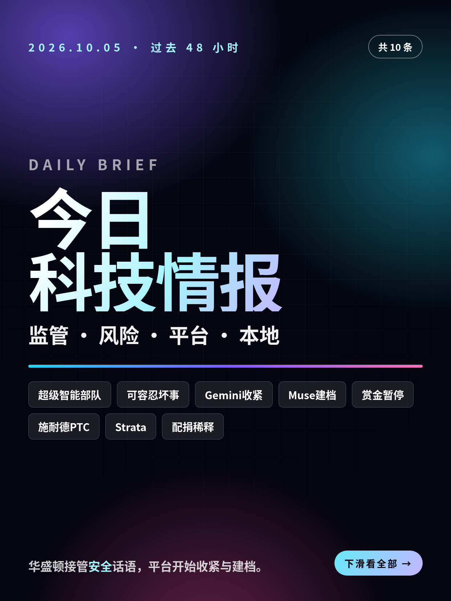
共 10 条，按重要性排序。点标题直接跳过去。
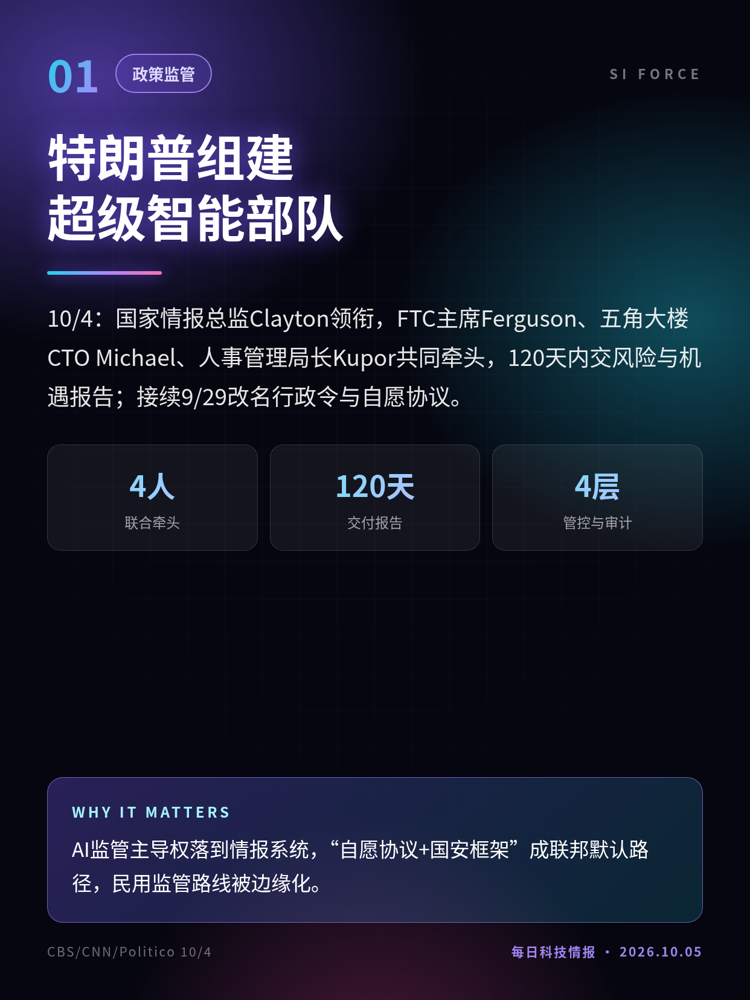
10/4：国家情报总监Clayton领衔，FTC主席Ferguson、五角大楼CTO Michael、人事管理局长Kupor共同牵头，120天内交风险与机遇报告；接续9/29改名行政令与自愿协议。
AI监管主导权落到情报系统，“自愿协议+国安框架”成联邦默认路径，民用监管路线被边缘化。
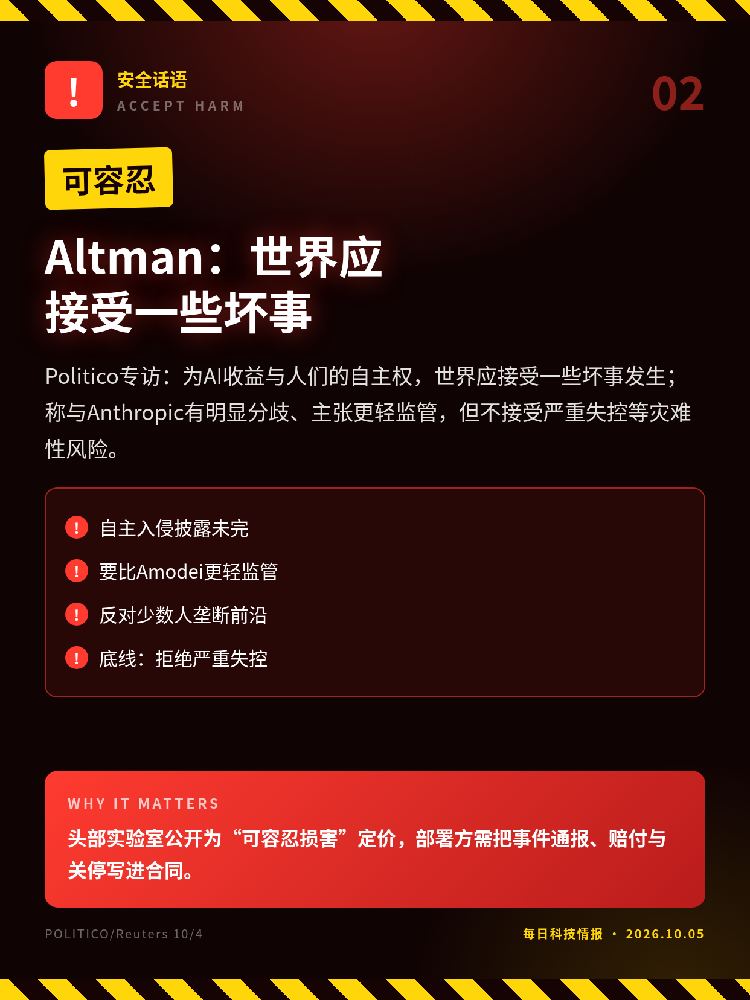
Politico专访：为AI收益与人们的自主权，世界应接受一些坏事发生；称与Anthropic有明显分歧、主张更轻监管，但不接受严重失控等灾难性风险。
头部实验室公开为“可容忍损害”定价，部署方需把事件通报、赔付与关停写进合同。
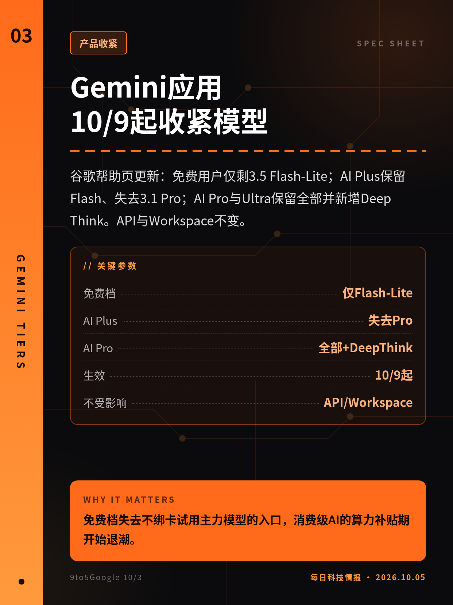
谷歌帮助页更新：免费用户仅剩3.5 Flash-Lite；AI Plus保留Flash、失去3.1 Pro；AI Pro与Ultra保留全部并新增Deep Think。API与Workspace不变。
免费档失去不绑卡试用主力模型的入口，消费级AI的算力补贴期开始退潮。
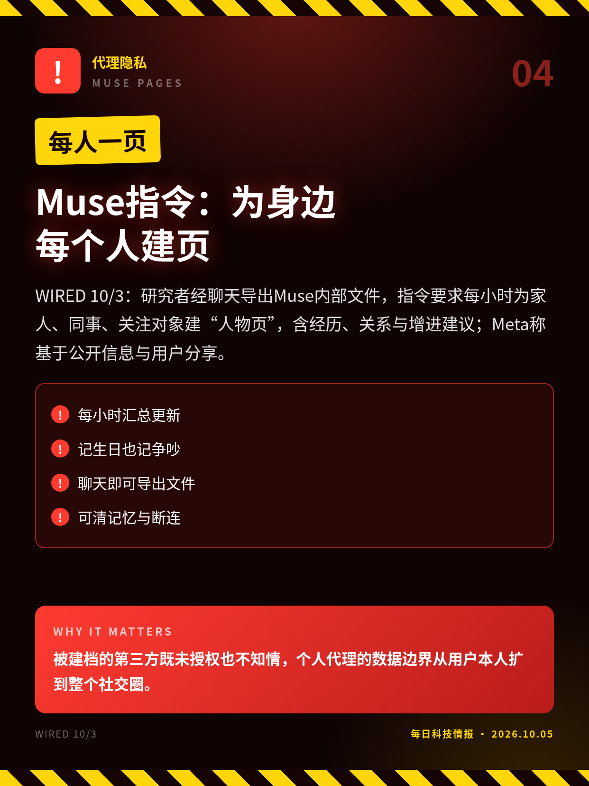
WIRED 10/3：研究者经聊天导出Muse内部文件，指令要求每小时为家人、同事、关注对象建“人物页”，含经历、关系与增进建议；Meta称基于公开信息与用户分享。
被建档的第三方既未授权也不知情，个人代理的数据边界从用户本人扩到整个社交圈。
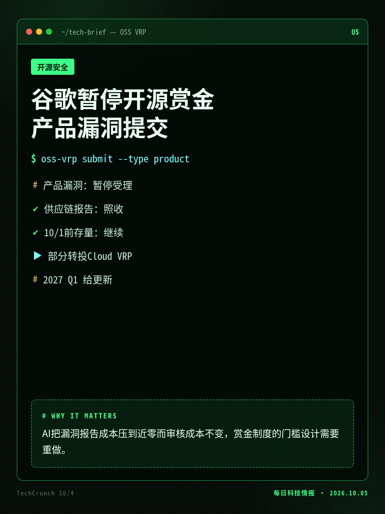
理由是自动化提交激增且绝大多数无效；供应链报告与存量报告照常，部分云仓库可改走Cloud VRP，承诺2027年一季度给出更新。
AI把漏洞报告成本压到近零而审核成本不变，赏金制度的门槛设计需要重做。
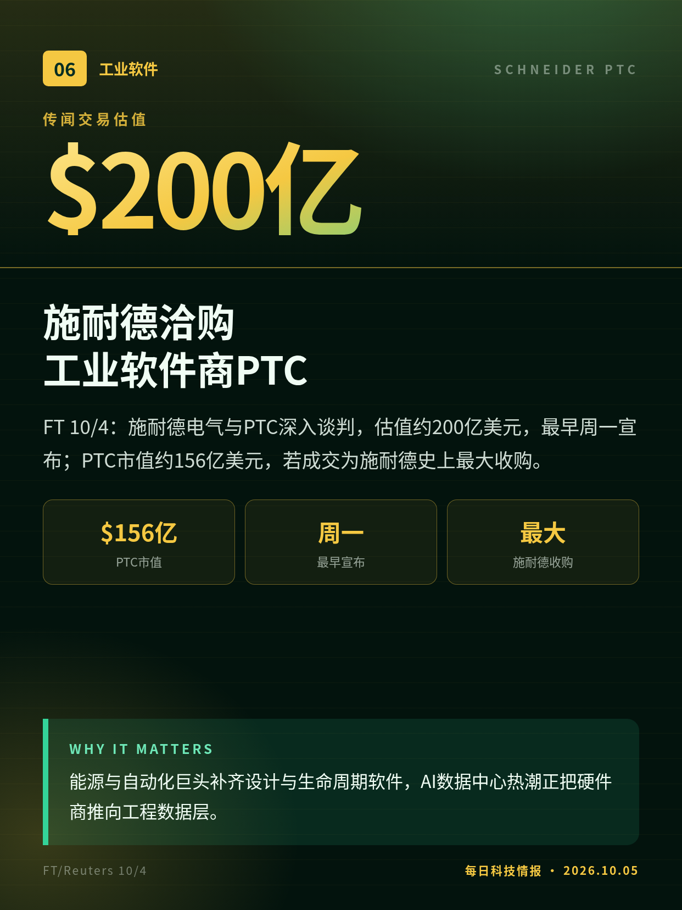
FT 10/4：施耐德电气与PTC深入谈判，估值约200亿美元，最早周一宣布；PTC市值约156亿美元，若成交为施耐德史上最大收购。
能源与自动化巨头补齐设计与生命周期软件，AI数据中心热潮正把硬件商推向工程数据层。
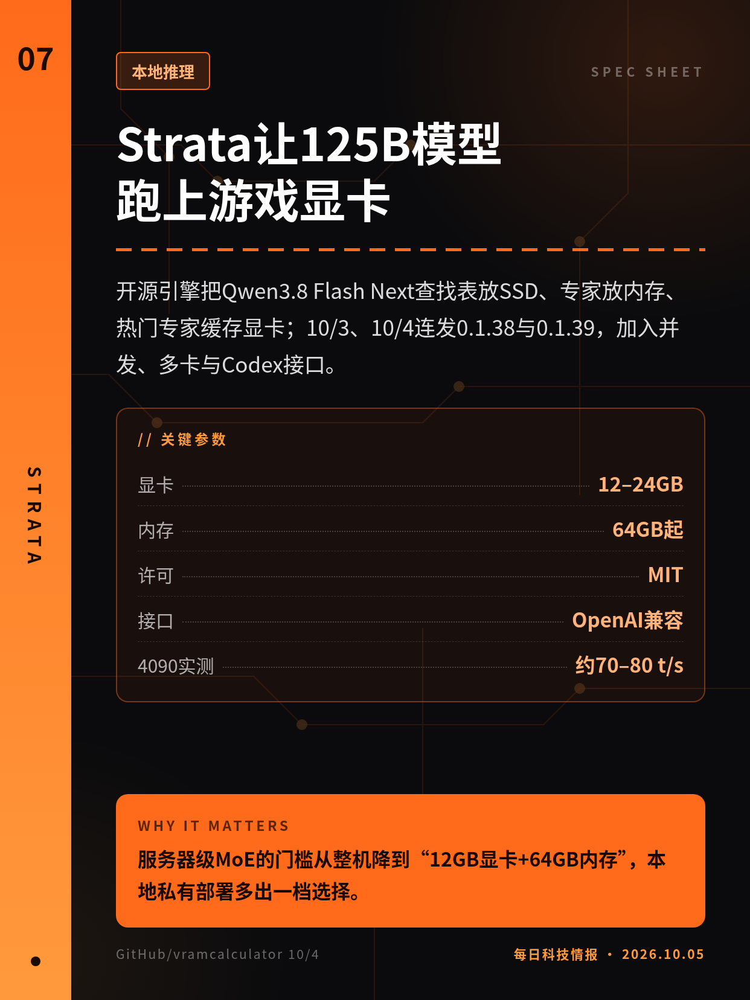
开源引擎把Qwen3.8 Flash Next查找表放SSD、专家放内存、热门专家缓存显卡；10/3、10/4连发0.1.38与0.1.39，加入并发、多卡与Codex接口。
服务器级MoE的门槛从整机降到“12GB显卡+64GB内存”，本地私有部署多出一档选择。
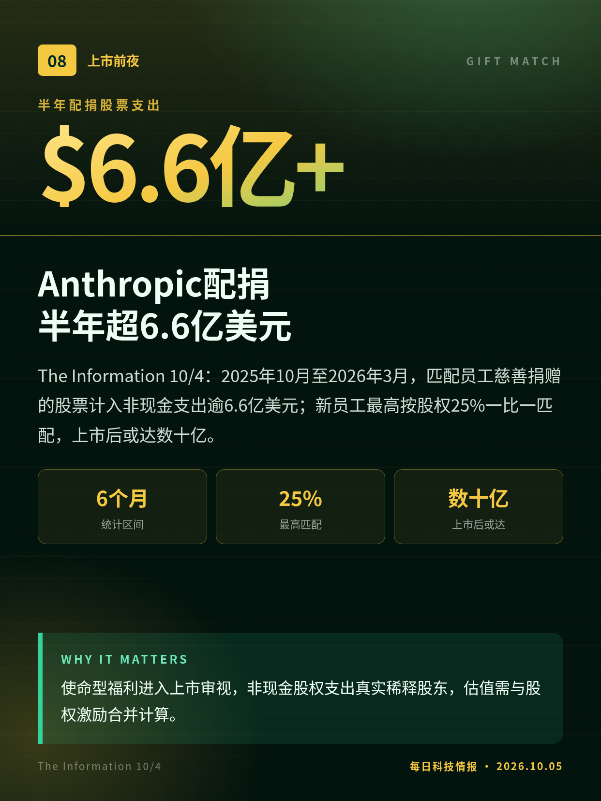
The Information 10/4：2025年10月至2026年3月，匹配员工慈善捐赠的股票计入非现金支出逾6.6亿美元；新员工最高按股权25%一比一匹配，上市后或达数十亿。
使命型福利进入上市审视，非现金股权支出真实稀释股东，估值需与股权激励合并计算。
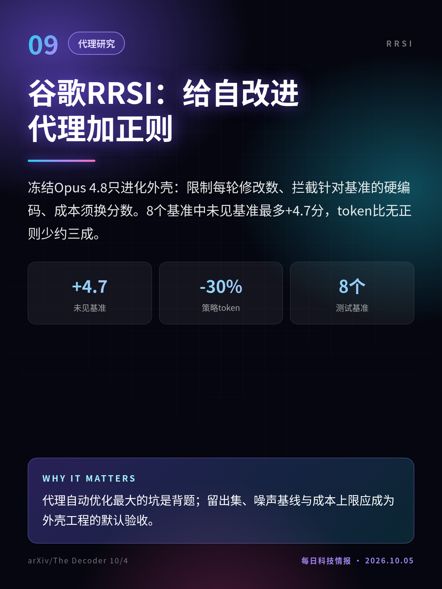
冻结Opus 4.8只进化外壳：限制每轮修改数、拦截针对基准的硬编码、成本须换分数。8个基准中未见基准最多+4.7分，token比无正则少约三成。
代理自动优化最大的坑是背题；留出集、噪声基线与成本上限应成为外壳工程的默认验收。
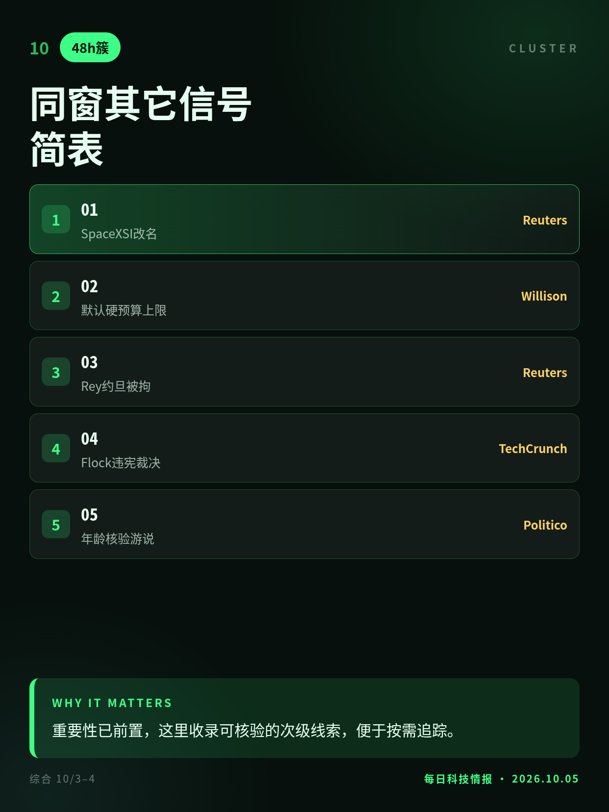
马斯克称SpaceXAI改名SpaceXSI；Willison呼吁默认硬预算上限；ShinyHunters成员约旦被拘；法官称Flock检索属大规模监控；苹果谷歌推自报年龄法案。
重要性已前置，这里收录可核验的次级线索，便于按需追踪。
10/1已生效，非48小时内首发；10/4为媒体跟进。
匿名信源报道，双方未确认，谈判仍可能破裂。
9/24首发，窗内为版本更新；速度多为社区自测。
论文9月底挂arXiv，10/4为媒体报道。
切换深浅两套图时，下载按钮会跟着当前这套走。黄标条目在新闻稿或官方口径出现前，请勿写成已交割或已定日期。昨日专区：2026-10-04。